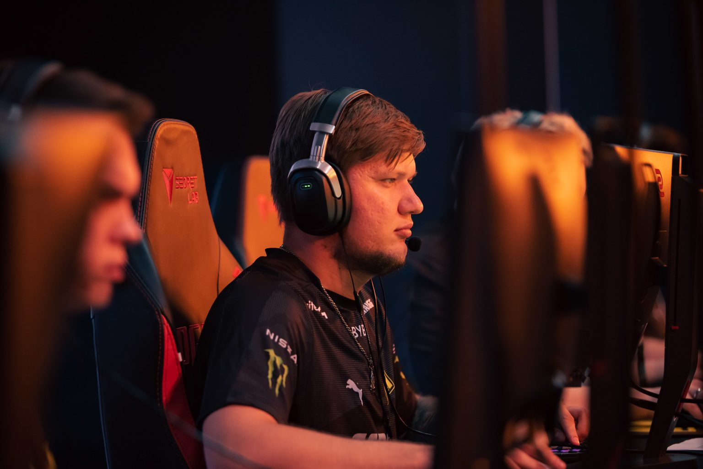
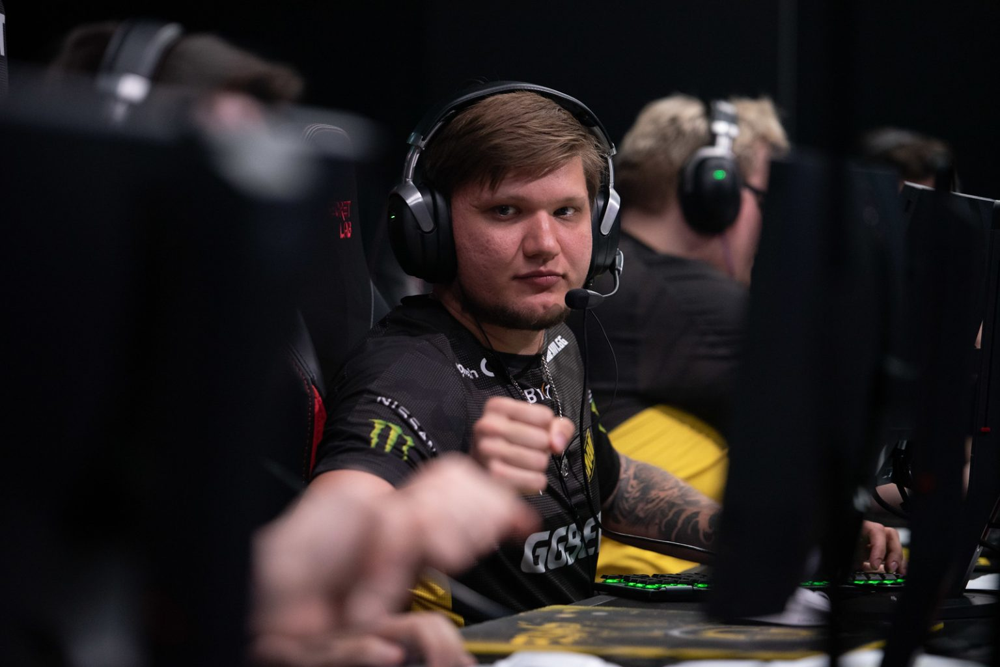

Українська зірка CS:GO Олександр s1mple Костилєв каже, що гравці Natus Vincere досі вважають себе найкращою командою світу. Читайте переклад інтерв’ю для HLTV.org зі справжньою легендою кіберспорту, яка знаходиться в одному кроці від другого чемпіонства на Мейджорі.
В півфіналі NAVI підтвердили своє право грати за титул повним домінуванням над ENCE у серії, яка була односторонньою від початку до кінця, оскільки Олександр s1mple Костильєв буквально знищив суперників, набравши рейтинг 1,76 за дві карти.
Ви вийшли дуже сильними проти ENCE, чи очікували ви від них вибору Nuke?
Так, ми очікували Nuke або Overpass. 80% нашої команди думали, що це буде Nuke, B1ad3 вчора сказав, що це буде Overpass, але сьогодні він сказав, що це буде Nuke, так і сталося. Я думаю, що вони його вибрали через наш рейтинг виграшів-поразок на карті. Можливо, в нас було десь 33% перемог, але це лише 2 програші в трьох іграх, тому що ми не обирали та не грали цю карту протягом останніх трьох місяців.
Це був дуже хороший вибір для нас, тому що ми почали CT і знали, як вони грають. Це карта, яку ми найбільше тренували перед Мейджором, тому що до цього втратили на ній високий відсоток перемог.
Ви почали досить сильно на Dust2, хоча в кінці вони змогли трохи повернутись. Ви були впевнені в тому, що закриєте карту?
Так. Зрештою, це був якийсь контакт на B, і ми просто сказали нашим хлопцям, що все ОК. Це була помилка, ти збираєшся закінчити, а ми стоїмо втрьох на A, можливо, вони просто вирішать зробити фейк. Їм це вдалося в останньому раунді, так що так, наш план гри на цій карті був дуже хорошим проти ENCE.
Ходили розмови про те, що у тебе не так багато практики в останній час і ми не побачимо найкращого s1mple, але сьогодні ти це зробив. Ти так само круто увірвешся на гранд-фінал?
Так, безперечно, YEKINDAR сказав, що у мене було 35 годин до цього Мейджору, але це неправда, у мене такий показник був до RMR, але перед цим турніром я грав цілодобово. Я і моя команда повністю готові.
Ми бачимо, що у всіх є моменти підйому, у b1t був чудовий етап Legends, у Boombl4 сьогодні також була чудова гра. Які відчуття в команді, це ваша перемога?
У нас є дійсно хороші шанси виграти Мейджор, і я думаю, що вся команда це розуміє і зосереджена на 100%. Усі наші гравці витратили багато часу на підготовку до перемоги на цьому Мейджорі, але наш суперник сильна команда. Карріган та Рейн не мають перемог на Мейджорах, тому вони дуже голодні, але ми голодні лише на краплю менше. Переможе та команда, яка на це більше заслуговує.
Це буде фінал мрії, зустрічаються дві найкращі команди світу. FaZe є першими в рейтингу, але я чув, багато хто говорив, що вони вважають, що NAVI все ще найкраща. Чого ви очікуєте від такого матчу на фіналі Мейджора з великою аудиторією?
Я сподіваюся, що більшість шанувальників буде вболівати за нас, тому що, коли FaZe сьогодні грали проти Spirit, я бачив багато фанатів FaZe, і я сподіваюся, що незабаром ми вирішимо, хто справжній номер один.
Саме в цьому матчі вирішиться, хто зараз номер один у світі?
Так, так. Багато людей задаються питанням, хто насправді найкращий? Через проблеми у світі у нас теж були певні проблеми й FaZe зайняли наше місце, але ми хочемо довести, що ми все ще здатні перемогти будь-яку команду.
Як ви до цього ставитеся, чи вважаєте себе найкращими?
Так, я відчуваю, що ми номер один. Ми знаходимося між номером один і номером два після того, як вони виграли ESL Pro League, тому що вони виграли два турніри поспіль, а ми втратили деякі очки з попередніх турнірів…
Але, не враховуючи рейтинги, чи вважаєте ви себе найкращими у світі?
Так. Ми завжди це відчуваємо, завжди нагадуємо собі, що ми найкращі. Але ви бачите, як багато команд крадуть у нас кілька раундів. Ми розуміємо, що важко залишатися на вершині, та що нам потрібно викластися на всі 100%, щоб повернути собі перше місце.
________________________________________________________________________
Нагадаємо, що фінал PGL Major Antwerp 2022 відбудеться 22 травня о 21.00 за Києвом. Студія
Maincast проведе українськомовну трансляцію події зі студії.
Читайте також статтю про те, чому перемога NAVI на Мейджорі може мати для команди не найкращі наслідки.
#Natus Vincere__________________
#Na^Vi__________________
#інтерв’ю з сімплом__________________
#Топ__________________